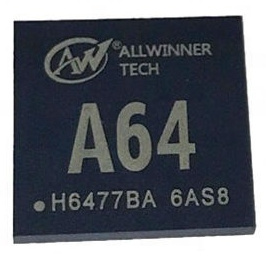

Allwinner A64
|

Marketing photo of the Allwinner A64 |
|
| Manufacturer | Allwinner |
|---|---|
| Name | A64 |
| Architecture | aarch64 |
| CPU | 4x 1.152 GHz ARM Cortex-A53 |
| GPU | ARM Mali-400 MP2 |
| Year | 2015 |
| Process | 40nm |
| Mainline | yes |
| Components | |
| CPU |
Partial
|
| UART |
Works
|
| Storage |
Works
|
| USB |
Works
|
| Display |
Works
|
| GPU |
Partial
|
| Pinctrl |
Works
|
| I²C |
Works
|
| Audio |
Works
|
| Video |
|
| Thermal |
Works
|
| WiFi |
Unavailable
|
| Bluetooth |
Unavailable
|
| Modem |
Unavailable
|
| GPS |
Unavailable
|
| Camera |
Works
|
| Suspend |
Partial
|
{kind=link}
Devices
| Device | Codename | Mainline | Category |
|---|---|---|---|
| Navon iQ7 2018 | navon-iq7-2018 | testing | |
| PINE64 A64-LTS | pine64-a64lts | Y | testing |
| PINE64 Don't be evil (devkit) | pine64-dontbeevil | Y | testing |
| PINE64 PinePhone | pine64-pinephone | Y | main |
| PINE64 PineTab | pine64-pinetab | Y | community |
| Popcorn Computer Pocket P.C. | popcorncomputer-pocketpc | testing | |
| Sourceparts Pocket P.C. | sourceparts-pocketpc | Y | testing |
See also
- A64 on linux-sunxi
- A64 on Allwinner's website